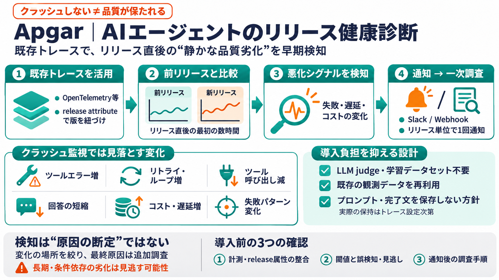

Show HN: Apgar – Catch agent regressions without an LLM judge | Hacker News
It's not meant to be another monitoring tool. We still use Langfuse for that. Apgar only tries to answer "is this releas…

AIエージェントの新リリース直後に、既存トレースを使って「前リリースより悪化していないか」を検知する運用支援ツールです。クラッシュ監視だけでは見落とす品質劣化（例：失敗増・遅延増）を狙います。
LLMエージェントは、モデル差し替え・プロンプト変更・ツール実装変更・外部サービス変化で挙動が変わりやすいです。致命的に落ちなくても、成功率や応答品質が静かに劣化します。
Apgarは「リリース直後の最初の数時間」に焦点を当てます。変更影響が集中しやすいので、悪化の開始点を早く見つけられます。
OpenTelemetryなどの既存トレースを再利用し、トレースに「release attribute」（deploy版情報）を付けて送信します。これによりリリース単位の比較が可能になります。
※抜粋の範囲では、閾値や統計手法の詳細は不明です。
Apgarは「クラッシュしない」を超えて、トレース指標の変化から悪化を検知します。典型例は次のような挙動シグナルです。
リリースごとに検知結果が集約され、SlackメッセージまたはWebhookで通知されます。担当者は「どの信号が動いたか」を手がかりに一次調査に入れます。
ApgarはLLM judgeや学習用データセットを不要とする方針です。既存トレースを使うことで、評価コストと導入負担を抑える狙いがあります。
※内部でルールや統計比較を行う可能性はあり、詳細は抜粋からは不明です。
README抜粋では「プロンプト／完了文を保存しない（no stored prompt or completion text）」方針が示唆されます。運用負荷・プライバシー懸念・追加コストの増加を抑える設計意図です。
導入はDocker ComposeまたはHelmチャートを用いたKubernetes運用に対応します。リリース属性をトレースに付与して送信することで、リリース単位の比較が成立します。
※「付与漏れ」があると解釈が崩れる可能性があります。
コーディングエージェント（Claude Code、Cursor、Codex等）にApgarスキルを組み込む流れが示されています。目的は、比較に必要な計測・属性が取りこぼされない状態を事前に揃えることです。
通知は「どの信号が動いたか」「変化が集中している場所」を示す、とされています。一次切り分けには有効ですが、最終原因（モデル変更・外部API・ツール等）の断定は追加調査が必要です。
また「最初の数時間」重視のため、徐々に劣化する問題や条件依存の問題は見逃す可能性があります。
Apgarは羅針盤として有効ですが、導入時は「比較の前提」「誤検知/見逃しの扱い」「調査手順」をチームで決めるのが重要です。クラッシュ監視の次に、品質劣化の早期検知を運用に組み込みましょう。
It's not meant to be another monitoring tool. We still use Langfuse for that. Apgar only tries to answer "is this releas…
画像 アプリ画面 ``` ```mermaid graph TD Start([ユーザーからの入力]) --> Router{意図に応じて振り分け} Router -->|条件変更| UpdateAgent[条件更新エージェント] Ro…
また、他の Langfuse ツールに影響を与えない Codex 固有の設定が必要な場合は`LANGFUSE_CODEX_PUBLIC_KEY`、 `LANGFUSE_CODEX_SECRET_KEY`および `LANGFUSE_CODEX…
生成AI クエリ 文(画像)の生成 • 個人情報や組織の機密 情報を入力するリスク • 違法なコンテンツを作成す る指示を入力するリスク • 生成した文章に誤り（ハルシ ネーション）や差別的な偏り （バイアス）が含まれるリスク • 著作権や…
長らく、人工知能の活用は自然言語の対話や処理、いわゆる「質問への回答」に限定されていた。しかし、2026年に入り、この論理は完全に打ち砕かれた。AIエージェントの本質は、環境認識に基づいた自律的な意思決定と実行能力にある。OpenAIが発表…